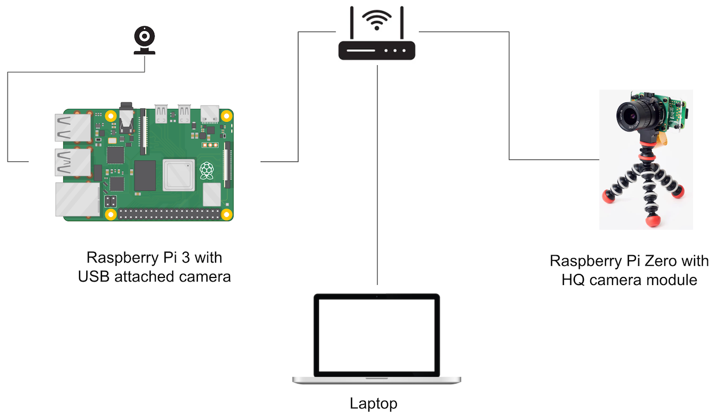

System Programming for
Realtime Video Capture in Go
GopherCon 2022
Vladimir Vivien üá≠üáπ
(@VladimirVivien)
Software engineer / author
Agenda
To show how to use Go to stream video data directly from a video capture device attached to a Linux machine ...
Something like üëáüèæ
The origin story
COVID made me do it!
Build a webcam gadget
with the Raspberry Pi + HQ cam
...using the Go programming language.
How hard can it be? ü§∑üèΩ‚Äç‚ôÇÔ∏è
A lot of C code
Linux device drivers
USB Video Class (UVC) drivers
Building UVC gadget drivers
Video for Linux API
Build a webcam gadget
Use Go to capture video data using video for Linux
The Video for Linux API v2 (V4L2)
linuxtv.org
Part of the Linux specs for media infrastructure
C APIs for device drivers and user-space apps
User-space API defined as sequences of system calls
From Go to V4L2
Package
golang.org/x/sys/unix
Use
cgo
to extract the V4L2 C types and values
Use package
unsafe
pass pointer values to V4L2 calls
System calls to capture video
open, close -- open/close device file descriptor
ioctl -- sends control requests to device
mmap, munmap -- maps/unmaps app's address space
Let's see how to capture a video frame with Go
First, let's setup some V4L2 constants
import sys "golang.org/x/sys/unix"
const (
PixelFmtMJPEG uint32 = C.V4L2_PIX_FMT_MJPEG
FieldAny uint32 = C.V4L2_FIELD_ANY
FieldNone uint32 = C.V4L2_FIELD_NONE
BufTypeVideoCapture uint32 = C.V4L2_BUF_TYPE_VIDEO_CAPTURE
type PixFormat struct {
Width uint32
Height uint32
PixelFormat uint32
Field uint32
...
}
)
Define an ioctl wrapper function
func ioctl(fd, req, arg uintptr) (err error) {
if _, _, errno := sys.Syscall(sys.SYS_IOCTL, fd, req, arg); errno != 0 {
return errno
}
}
Open the device to get file descriptor
func main()
devFile, err := os.OpenFile("/dev/video0", sys.O_RDWR|sys.O_NONBLOCK, 0)
if err != nil {
log.Fatal(err)
}
fd := devFile.Fd()
...
}
Configure video data format
func main(){
...
setFormat(fd, PixFormat{Width: 640, Height: 480, PixelFormat: PixelFmtMJPEG})
}
func setFormat(fd uintptr, pixFmt PixFormat) error {
var v4l2Fmt C.struct_v4l2_format
v4l2Fmt._type = C.uint(BufTypeVideoCapture)
*(*C.struct_v4l2_pix_format)(unsafe.Pointer(&v4l2Fmt.fmt[0])) = *(*C.struct_v4l2_pix_format)(unsafe.Pointer(&pixFmt))
// send command
if err := ioctl(fd, C.VIDIOC_S_FMT, uintptr(unsafe.Pointer(&v4l2Fmt))); err != nil {
return err
}
return nil
}
Request device buffer setup
func main() {
...
reqBuffers(fd, 1)
}
func reqBuffers(fd uintptr, count uint32) error {
var reqbuf C.struct_v4l2_requestbuffers
reqbuf.count = C.uint(count)
reqbuf._type = C.uint(BufTypeVideoCapture)
reqbuf.memory = C.uint(StreamMemoryTypeMMAP)
if err := ioctl(fd, C.VIDIOC_REQBUFS, uintptr(unsafe.Pointer(&reqbuf))); err != nil {
return err
}
return nil
}
Oh yes, there are more steps.
Map device memory for video data input
func main() {
...
data, _ := mmapBuffer(fd, 0)
}
func mmapBuffer(fd uintptr, idx uint32) ([]byte, error) {
var v4l2Buf C.struct_v4l2_buffer
v4l2Buf._type = C.uint(BufTypeVideoCapture)
v4l2Buf.memory = C.uint(StreamMemoryTypeMMAP)
v4l2Buf.index = C.uint(idx)
if err := ioctl(fd, C.VIDIOC_QUERYBUF, uintptr(unsafe.Pointer(&v4l2Buf))); err != nil {
return nil, err
}
bufSvc := *(*BufferService)(unsafe.Pointer(&v4l2Buf.m[0]))
mbuf, err := sys.Mmap(int(fd), int64(bufSvc.Offset), int(v4l2Buf.length), sys.PROT_READ|sys.PROT_WRITE, sys.MAP_SHARED)
if err != nil {
return nil, err
}
return mbuf, nil
}
Queue device buffer for data capature
func main() {
...
queueBuff(fd, 0)
}
func queueBuff(fd uintptr, idx uint32) error {
var v4l2Buf C.struct_v4l2_buffer
v4l2Buf._type = C.uint(BufTypeVideoCapture)
v4l2Buf.memory = C.uint(StreamMemoryTypeMMAP)
v4l2Buf.index = C.uint(idx)
if err := ioctl(fd, C.VIDIOC_QBUF, uintptr(unsafe.Pointer(&v4l2Buf))); err != nil {
return err
}
return nil
}
Request to start video streaming
func main() {
...
startStreaming(fd)
}
func startStreaming(fd uintptr) error {
bufType := C.uint(BufTypeVideoCapture)
if err := ioctl(fd, C.VIDIOC_STREAMON, uintptr(unsafe.Pointer(&bufType))); err != nil {
return err
}
return nil
}
Dequeue the filled buffer
func main(){
...
n, _ := dequeueBuffer(fd, 0)
}
func dequeueBuffer(fd uintptr) (uint32, error) {
var v4l2Buf C.struct_v4l2_buffer
v4l2Buf._type = C.uint(BufTypeVideoCapture)
v4l2Buf.memory = C.uint(StreamMemoryTypeMMAP)
if err := ioctl(fd, C.VIDIOC_DQBUF, uintptr(unsafe.Pointer(&v4l2Buf))); err != nil {
return 0, err
}
return uint32(v4l2Buf.bytesused), nil
}
Finally, process the video data
func main() {
jpgFile, err := os.Create("capture.jpg")
if err != nil {
log.Fatal(err)
}
defer jpgFile.Close()
if _, err := jpgFile.Write(data[:n]); err != nil {
log.Fatalf("failed to save file: %s", err)
}
}
No less then 10 steps (with some omitted)
Requires understanding of V4L2 control commands
Commands must be invoked in a prescribed order
Device driver errors can be cryptic
Can we do better?
 |
github.com/vladimirvivien/Go4VL Exposes an idiomatic Go API with with primitives that hide the complexities of working with V4L2. |
Capture a frame with Go4VL
import "github.com/vladimirvivien/go4vl/device"
func main() {
// open and configure device
dev, err := device.Open(
"/dev/video0",
device.WithPixFormat(v4l2.PixFormat{PixelFormat: v4l2.PixelFmtMJPEG, Width: 640, Height: 480}),
device.WithBufferSize(1),
)
defer dev.Close()
// start capturing
if err := dev.Start(context.TODO()); err != nil {
log.Fatal(err)
}
// grab frame
frame := <-dev.GetOutput()
// process frame
file, err := os.Create("pic.jpg")
defer file.Close()
if _, err := file.Write(frame); err != nil {
log.Fatal(err)
}
}
Demo setup
